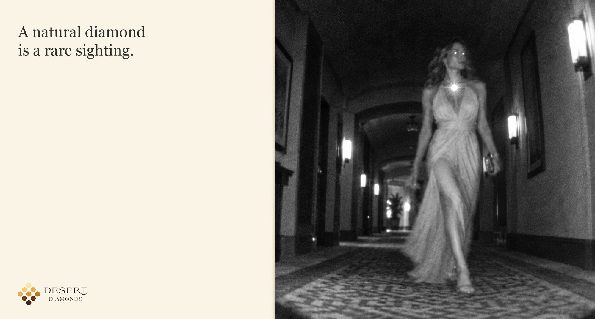
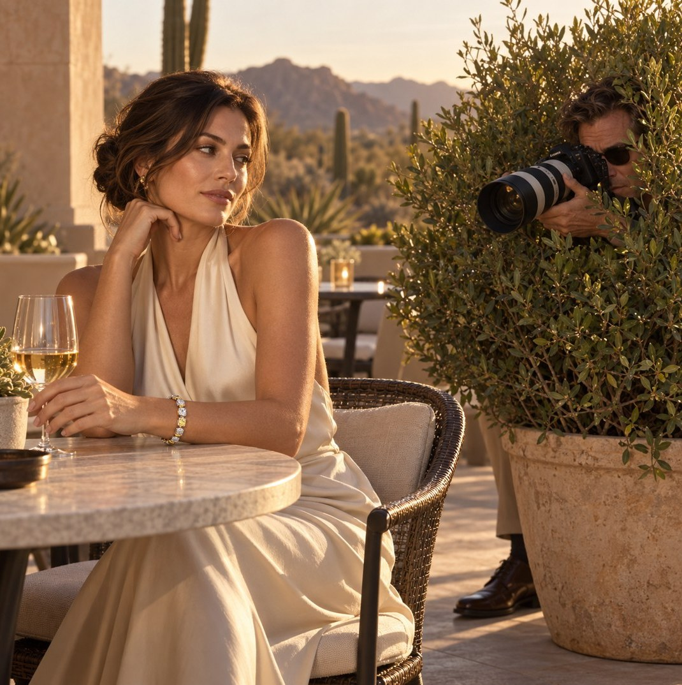

DESERT DIAMONDS
A natural diamond is a rare sighting.
An elusive subject. An obsessive photographer. An increasingly questionable hiding place.

The sighting
The insight
The rarer the sighting, the greater the obsession.
The idea
A natural diamond is a rare sighting.
The obsession
Field photographers will go anywhere for one glimpse of the real thing. Anywhere.



Also spotted



Caught on camera
Field footage. The stakeout, played completely straight.
The expedition
The rarest sightings weren't ours to capture. They were yours.
Rare Sightings, the campaign's microsite, hands the binoculars to everyone else. Natural diamond owners upload a photo of their own ring, name it and log where it was spotted. Each submission earns an official field report, and the best sightings will be featured in the archive and on Instagram.


The rare thing
Some things are worth looking for.
Desert Diamonds · Premier Gem